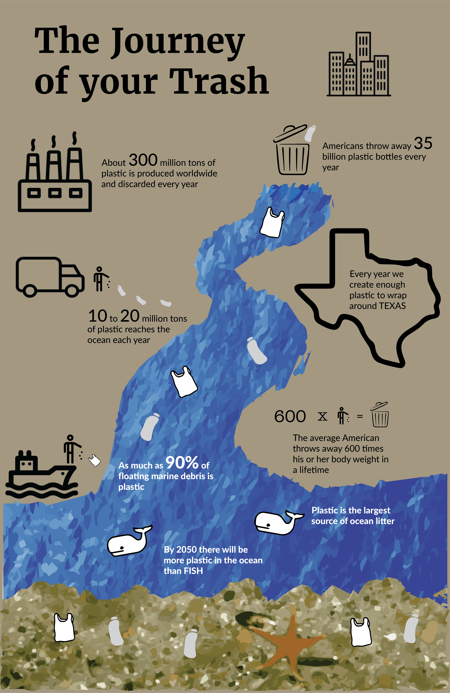

Plastics are chemically inert materials made from oil. Because they don't react with materials like alcohol, gasoline, or acid, they are great for storing stuff. Unfortunately, that means that they also don't decay. First invented in 1907, production of synthetic plastics took off during World War II and has been expanding ever since.
Since plastics don't decay, they spread through the environment and cause major disruption to habitats for people and animals.
